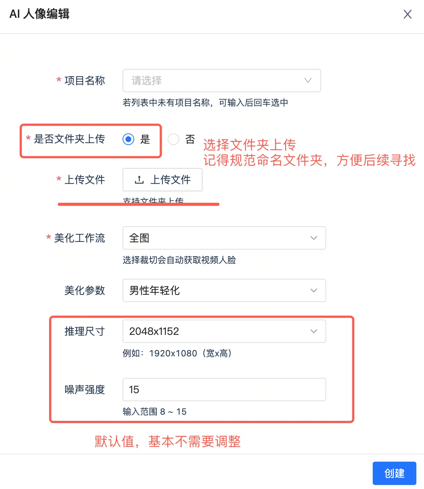
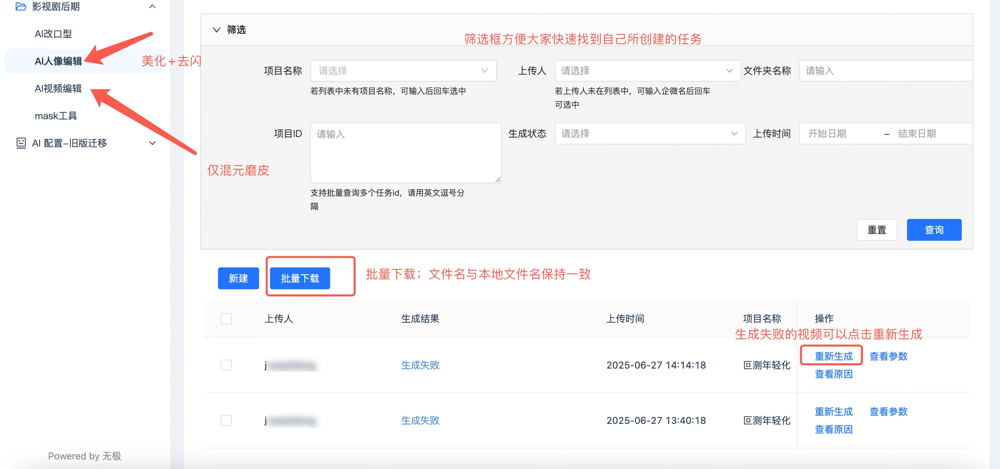
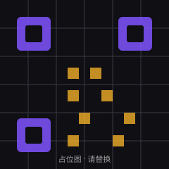

产品设计
把模糊诉求拆成可验收的功能与流程，输出交互原型与评审材料。
我是周翔，AI 产品经理。从 AIGC 创作实习到 Agent 产品搭建， 从黑客松组队到独立工具开发——我关注的是：找到真实需求，把模型能力变成可用的产品。
把 AI 产品从想法推到可交付：To B 工作台、AIGC 创作工具与 Personal Agent。
我是周翔，AI 产品经理 / AI Builder，方向集中在 To B 交付、AIGC 创作 与 Personal Agent。产品设计与技术实现我都自己下场：从需求拆解、交互设计， 到把东西真正跑起来。
习惯把想法直接做成能用的东西——13 个开源项目里，既有面向业务交付的工作台， 也有能在线体验的小工具。做产品时我更在意：问题是不是真的、链路能不能跑通、 交付之后谁来维护。
把模糊诉求拆成可验收的功能与流程，输出交互原型与评审材料。
Python / JavaScript / Swift 都能上手，把方案从原型推到可运行的工作台。
面向真实业务场景交付，覆盖需求澄清、知识整理、上线与后续维护。
按时间倒序排列。每条都写清楚：负责什么、做了什么判断、最后留下什么结果。
在百人规模的 AI 产品组参与 A1.art 图片 / 视频生成平台：负责滤镜方向的选题验证， 跟随新模型发布做图像编辑与视频模型的选型评测，并独立主导了一次从调研到上线的功能优化需求。
与设计团队、算法团队一起，承接影视剧人物年轻化处理，从 0 到 1 走完需求拆解、工作流搭建、 效果验证到项目交付。跑通效果之后真正卡住交付的不是"能不能生成"，而是"量太大、人工环节太多"， 于是把重心放在产能上。
每个案例都回答三件事：问题是什么、你怎么取舍、最后交付了什么。
影视剧里主要演员需要做年轻化处理，全片约 35 万帧。效果本身能跑通，但量太大： 逐帧人工处理扛不住固定排期，人力成本有限，项目难以如期交付。
问题定义：先做单点 demo 把效果验证出来，再盘点真实工作量——瓶颈不在"能不能生成"， 而在"量太大、人工环节太多"。于是把目标从"做一个好效果"改成"把产能做出来"。
模型选型：按人像质量 30%、提示词遵循 25%、角色一致性 20%、生态成熟度 15%、 推理效率 10% 五个维度加权，对 6 个候选模型打分（FLUX.1 [dev] 8.2 分最高，高于 FLUX.1 [schnell] 7.8、Qwen-Image 7.3、SDXL 6.4）。选 FLUX.1 [dev] 的同时补它的短板： 用 IP-Adapter 保身份 + ControlNet 线稿约束 + Mask 区域限定，把帧间脸崩率从 SDXL 的 30% 压到 5% 以下。
三条提效线：① 达芬奇批量加去背景，把重复的合成动作批量化； ② 用 AI 自动提取人脸 ID 打 mask（SAM2 自动分割 → 裁剪视频人脸 → MorphFace 人脸变形 → 合成遮罩 → ProRes 合并），替代逐帧手绘； ③ 把工作流封装成平台，让非技术同事也能跑，减少对个人操作的依赖。
把工作流交给别人跑：把工作流封装成平台上的「AI 人像编辑」入口——同事只需要选项目、 上传文件夹、选"男性 / 女性年轻化"这类美化参数就能提交任务，推理尺寸与噪声强度都固化成默认值， 不需要理解 CLIP 层数或 ControlNet 强度。平台支持按项目 / 上传人 / 状态筛选、批量下载， 生成失败的任务可以一键重新生成并查看参数。
结果与复盘：整体效率提升 200%，在不增加人力的前提下满足项目交付节奏。 Mask 只跑人脸区域（压缩到原图 1/4 面积）配合夜间批量处理，35 万帧可以在排期内完成。 复盘：提效的前提是先把效果标准定死，否则省下来的时间会花在返工上。


短剧与短视频创作里，"文生视频"基本是黑盒：给出提示词只能等结果，中间过程看不见、改不了， 一旦不满意只能重来，返工成本很高。
问题定义：不做单点式生成，而是做一条"生产线"——剧本策划 → 角色 / 场景设计 → 分镜规划 → 参考图生成 → 视频生成 → 后期剪辑，每一阶段都产出可查看、可确认、可修改、 可继续生成的中间资产。
关键动作：用 Python 打通阶段之间的资产流转与状态管理，前端 Node.js； 模型服务由使用者自带 API Key，仓库不包含任何密钥、会话记录与生成产物； 文档中英双语，以 MIT 协议开源。
结果与复盘：【待补：项目目前状态 / 跑通的成片数量 / 你自己最满意或最想改的一点】
法律检索、类案研究与合同审查的场景里，结论必须可追溯：模型直接给答案不能用于交付， 需要证据链、来源标注与人工裁决，还得处理检索源不稳定和配额限制。
问题定义：把"可核验"当成产品底线——逐字核验、双源印证、来源冲突交人工裁决； 主路径从"检索为主"改为"用户自带材料为主、检索为辅"，避免把不确定性包装成结论。
关键动作：搭 Harness 内核 + 三条门禁 + 类案研究链路 + 最小验收界面； 补降级矩阵与稳定性实测、重试闭环、本地依据库（法条 / 判例命中复用、逐字核验）； 设计动态追问——每次只问一个关键情况、最多三轮、可跳过，并说明未知情况对结论的限制。
结果与复盘：【待补：例如完成的阶段范围（2-1 ~ 2-4）、Word 模板产出、跑通多少份真实材料】
鞋服企划从需求到打样链路很长：设计要求分散在对话、草图与参考图里，风格方向很难在对齐前收敛， 候选方案和判断依据也容易散落，最后打样沟通要靠人反复对齐。
问题定义：把流程拆成"需求整理 → 风格方向 → 候选生成 → 单款修改 → 方案页 → 打样沟通资料"， 在关键节点设置人工确认，避免 AI 一路跑到底却没人能拍板。
关键动作：对话式收集款式需求，支持上传草图、面料照片与参考图；生成后逐项检查， 图片与检查结果随项目保存；确认一款后进入独立方案页，展示设计依据并可下载图片与首版打样沟通资料； 3D 预览做成可单独接通的服务，不阻塞主链路。
结果与复盘：【待补：例如与哪家企业 / 团队一起跑过、迭代了几轮、哪一步最容易被卡住】
都是可以直接点开看代码的项目，覆盖 To B 工作台、AIGC 创作工具与个人效率工具。
从灵感到成片的 AI 影视创作工作台，支持剧本、角色、分镜、图像与视频生成（MIT 开源）。
法律问答、类案研究、合同审查与法规查找工作台，附交互设计预览。
企划 → AI 方向 / 面料 / 版型 / 工艺 → 用料与尺寸 → 打样，含五道人工确认。
在本机运行的 AI 办公入口：智能助手、文档处理、项目管理、模型对比与定时任务。
以证据为依据的 AI / 软件产品拆解方法，输出响应式 HTML 报告。
六层产品分析框架：市场、商业、用户、技术、模型与数据。
基于 Three.js 的太阳系、轨道跟随与地球探索可视化。
开源像素回合制战棋，支持单人对战与局域网联机。
隐私优先的 macOS 原生助手，查看 Codex 额度、重置活动与任务状态。
给猫狗兔鼠鸟起名字的单文件网页工具，可直接在线体验。
踩过的坑写成可复用的步骤，下一次遇到同类问题能直接照着做。
步骤：跑通单点 demo → 按镜头 / 任务量盘点每个环节的人工工时 → 把环节归到三层 （批处理 / AI 自动化 / 平台化）→ 用交付节奏反推先做哪一层。
三层杠杆：批处理解决"重复动作"（如达芬奇批量去背景）；AI 自动化解决"逐帧判断" （如自动提取人脸 ID 打 mask）；平台化解决"只有一个人会做"（把工作流封装成平台，让同事也能跑）。
适用边界：量小、一次性的任务不值得平台化；提效之前必须先固定效果标准， 否则省下来的时间会花在返工上。
步骤：先收集证据（文档、界面、数据、公开资料）→ 市场 → 商业 → 用户 → 技术 → 模型 → 数据，逐层给结论 → 输出可分享的报告。
核心约束：每一层的结论都要能指回证据；证据不足的层明确标注"待验证"， 不拿推测当结论。
适用边界：适合做竞品与自有产品的结构化拆解，不适合用来做需要快速拍板的决策。
【展开后的内容。】
【展开后的内容。】
欢迎交流 AI 产品、Agent 落地与项目合作，邮件最快回复。
